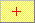
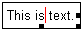
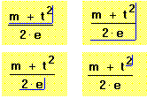
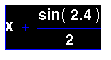

Editing Cursors |
The editing cursor takes on the three different forms shown below.
| Crosshair Cursor |

Click in any blank spot in your worksheet to get the crosshair cursor. The red crosshair, which defines your entry point, exists only outside a math or text region. To move the crosshair, click in another blank spot or use [Enter], [Spacebar], or the arrow keys.
The next math or text region you type begins at the location of the crosshair.
Note that as soon as you begin typing, the cursor turns into either the math editing lines cursor or a text cursor.
| Text Cursor |

The text cursor is used in text regions to insert and delete characters the same way you would in any word processor.
| Math Editing Lines |

Blue editing lines are used to edit math. Click anywhere in a math region to see them.
Use the editing lines to select parts of your math expression. Putting part of an expression between the editing lines is just like enclosing it in a pair of invisible parentheses. There are two parts to the editing lines:
To place an expression between the editing lines:
As a general rule, whatever is underlined and to the left of the insertion line becomes the first operand you type.
| Reverse video |
This equation is highlighted in reverse video.

To highlight in reverse video, hold the mouse button down and drag the cursor over the whole expression.